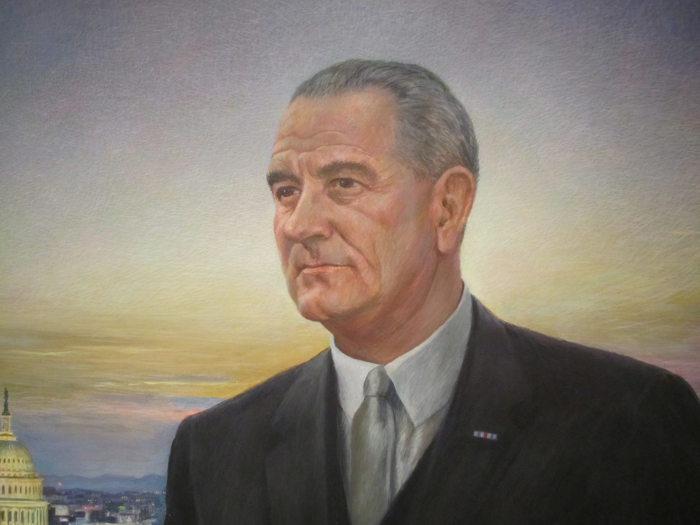
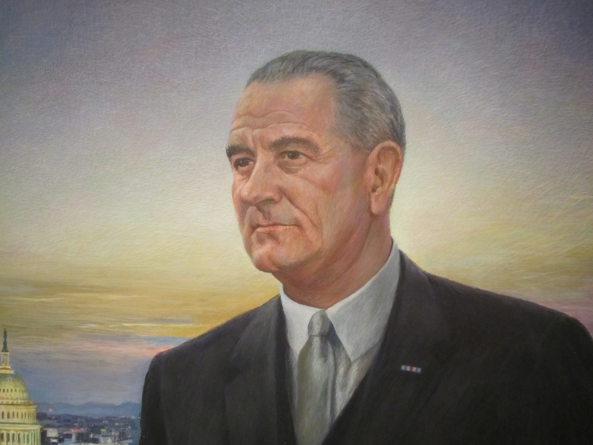

John F. Kennedy was the 35th President of The United States of America. On November 22nd, 1963, he was assassinated by who many think to be Lee Harvey Oswald. Multiple polls over the years have demonstrated that the majority of Americans believe that Oswald did not work alone and that Kennedy was involved in a conspiracy leading to his death. This opinion is even shared by Kennedy's nephew and Kennedy's brother who could have information not available to the public.
These opinions contradict those of the FBI and Warren commission who thoroughly investigated the incident and came to the same conclusion. According to those two parties Lee Harvey Oswald acted alone. According to investigations, once Oswald killed the President he fled the building (Texas school book depository) and killed an officer in an attempt to escape. After he was captured by police he denied the accusation, saying he was a victim of deception. Something that makes this narrative more interesting is that two days after Oswald's arrest he was shot and killed by Jack Ruby, a night club owner who shot him on live television in the Dallas police headquarters.
While awaiting his trial, Jack Ruby died of lung cancer while in jail, leaving no more obvious suspects to question.

This theory was first first introduced by the Warren Commission while investigating the assassination. According to the investigation there were three shots that were fired.
The first one missed the target of Kennedy and bounced and hit the sidewalk.
The third shot clearly hit Kennedy in the head dealing a fatal blow. However, there was still seven wounds that were unaccounted for by these bullets from other passengers.
The second shot is called the magic bullet. The theory states that one bullet went into Kennedy's back, came out his neck, went into Connally's (the passenger in front of Kennedy) back, exiting the front of his chest, hitting his wrist and exits hitting his left thigh. Authorities conclude that this is the most likely explanation for the wounds. The probability for this bullet to do that is so low and for that reason they call it the "Magic Bullet".
Once the bullet was recovered and examined, photos show that the bullet was in good condition but how could that be possible if it went through several solid bones?

Lyndon B. Johnson was the President after JFK. It is thought that LBJ's motive is that he didn't want Kennedy to be President any longer and wanted to be his replacement. Madeleine Brown, thought to be in a secret relationship with LBJ, fueled this theory as she stated that the night before the assassination she and LBJ attended a party where LBJ said "After tomorrow, those Kennedys will never embarrass me again. That's no threat. That's a promise". The majority of Texans didn't like LBJ and encouraged this theory making it gain popularity.
It is public knowledge that JFK and the CIA had always had shaky ties. This is most likely due to operation chaos, where the CIA spied on over 7,000 Americans, and reports of torture being done illegally. The CIA may have been worried about this uneasy friendship that Kennedy would cut funding. This would give them motive to hire Lee Harvey Oswald, have him killed, and have the guy who killed him "die from natural causes". This narrative is so wild that only a select number of people/organizations can pull that off, the CIA would definitely be on that list. Something that makes this theory even more interesting is that Oswald was spotted at the Russian embassy in New Mexico. This new information leads theorists to believe that the CIA may have been paying Oswald to be a double agent in the embassy and this would confirm ties between Oswald and the CIA.
 

These theories became so widely spread around publicly that there have been investigations done to determine if they did or did not happen. It does not help that the killer and the killer's killer are all dead and were not able to be questioned. The first theory about LBJ is not entirely possible because LBJ was somewhere else when the party was taking place. The most likely reason that Madeleine Brown made this comment was because their relationship had recently taken a very rocky turn and because she wanted revenge. Therefore, this theory is not possible unless there is information that proves LBJ was at the party or that LBJ did in fact say these things at a different time or place with Brown.
The second theory is a little harder to prove and disprove since it is extremely difficult to get a hold of any information pertaining to any form of involvement from the CIA. However, it is often with limited information that conspiracy theories are formed which leaves space for debate and speculation. The CIA would have the means and a potential motive for Kennedy's assassination as explained in the theory. Even with this information I find it hard to believe that a government organization so highly regarded as the CIA would go against one of their most important goals of protecting the President by killing him.

 Back to top
Back to top